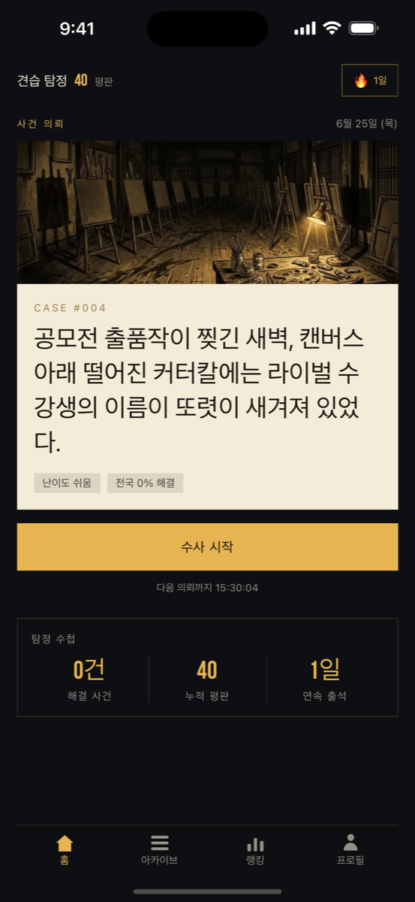
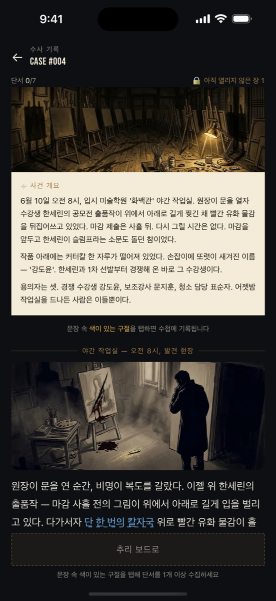
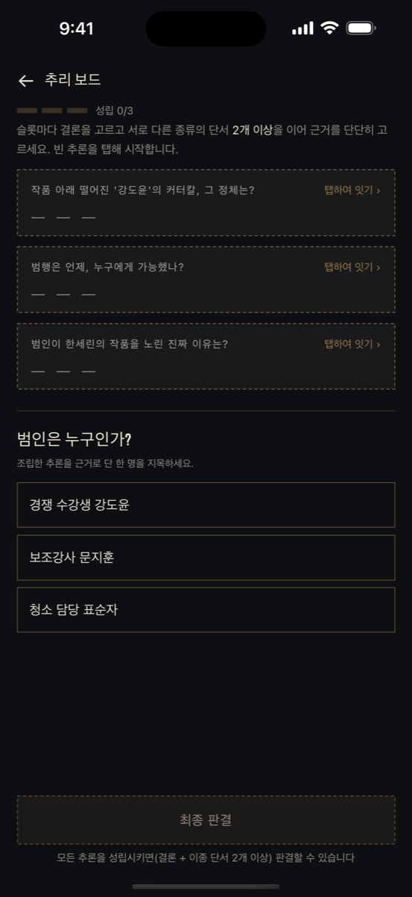
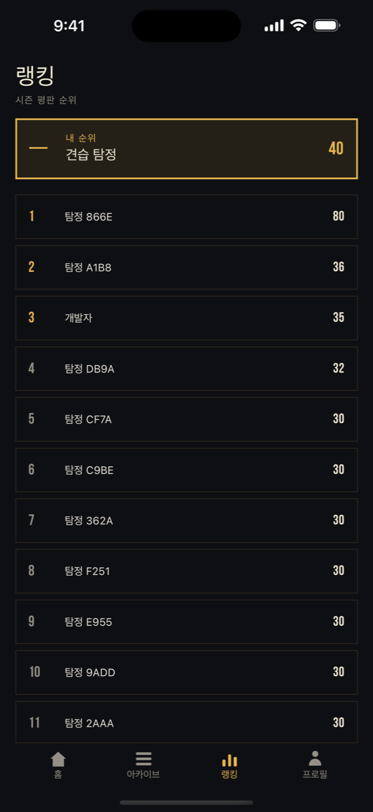

오늘, 당신에게 사건이 의뢰됩니다. 흩어진 단서를 직접 이어 진실을 파악하는 추리 퀴즈 — 매일 새 사건, 찍기 없는 능동 추론, 완전 무료.
완전 무료 · 광고 전용 · Pay-to-Win 없음iOS는 App Store에서 만나보세요. Android는 준비 중입니다.
매일 새 의뢰가 배정됩니다. 한 판 5–10분, 출근길·자기 전 짧은 추리 한 판.
객관식이 아닙니다. 단서를 직접 이어 추론을 만들고, 그 추론이 다음 추론의 재료가 됩니다.
선택은 즉시 채점되지 않습니다. 모든 단서를 모아 최종 판결 — 틀린 선택은 사건의 견고함을 깎습니다.
시즌 랭킹과 사건 아카이브. 결과는 스포일러 없는 카드로 공유 — 친구는 직접 풀어봐야 진실을 압니다.
추리 소설처럼 장면을 읽어 내려가며 문장 속 단서를 짚어 수집합니다.
이종 단서 2개 이상을 교차해 추론을 확정하고 범인을 지목합니다.
최종 판결로 일괄 채점. 사건의 진실이 한 호흡씩 드러납니다.



